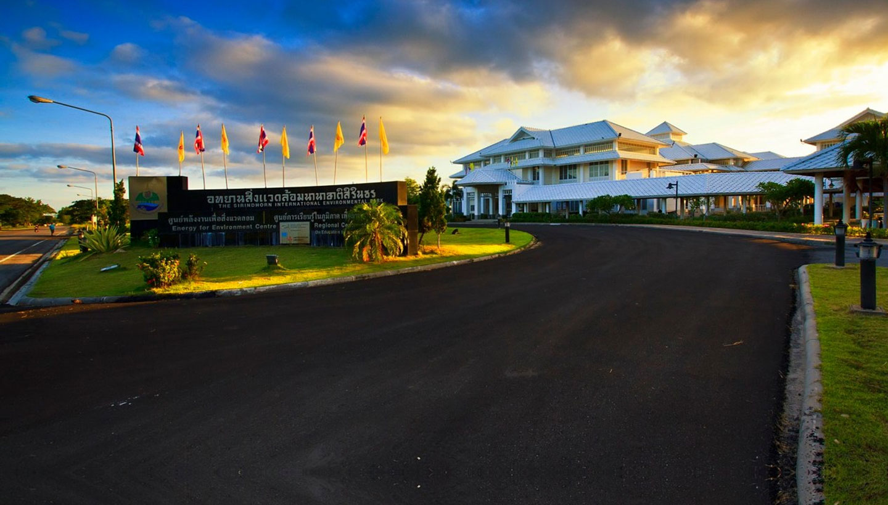

นัดหมายและยืนยันกำหนดการ
หากมาเป็นหมู่คณะ เข้าศึกษาดูงาน หรือวางแผนทำกิจกรรม ควรติดต่ออุทยานล่วงหน้าเพื่อแจ้งวัน เวลา และจำนวนผู้เข้าร่วม
เตรียมรายชื่อผู้เข้าร่วมและเอกสารขอเข้าศึกษาเยี่ยมชมตามคำแนะนำบนเว็บไซต์อุทยาน แล้วรอการยืนยันก่อนออกเดินทางเปิดหน้าบริการและแหล่งเรียนรู้ของอุทยาน เพื่อเช็กรายละเอียดก่อนมาเยือน
ข้อปฏิบัติ เอกสาร และคำแนะนำสำหรับผู้ที่ต้องการเข้าศึกษาดูงาน
เปิดข้อมูลอุทยาน ↗ 02LEARNING RESOURCESทำความรู้จักศูนย์พลังงาน พื้นที่ป่าชายเลน และระบบบำบัดน้ำเสีย
เปิดข้อมูลแหล่งเรียนรู้ ↗ 03OUTDOOR ACTIVITIESดูรายละเอียดการฟื้นฟูป่าชายเลน เพาะกล้าไม้ ปล่อยพันธุ์สัตว์น้ำ และพายเรือคายัค
เปิดข้อมูลกิจกรรม ↗เช็กรายละเอียดสำคัญ เพื่อให้วันเยี่ยมชมราบรื่นและตรงกับแผน
หากมาเป็นหมู่คณะ เข้าศึกษาดูงาน หรือวางแผนทำกิจกรรม ควรติดต่ออุทยานล่วงหน้าเพื่อแจ้งวัน เวลา และจำนวนผู้เข้าร่วม
เตรียมรายชื่อผู้เข้าร่วมและเอกสารขอเข้าศึกษาเยี่ยมชมตามคำแนะนำบนเว็บไซต์อุทยาน แล้วรอการยืนยันก่อนออกเดินทางสอบถามว่าเส้นทาง แหล่งเรียนรู้ หรือบริการที่ต้องการเปิดให้เข้าชมในวันที่ไปหรือไม่
กิจกรรมพายเรือคายัคขึ้นกับระดับน้ำขึ้นลง จึงควรตรวจสอบรอบให้บริการและการจองกับอุทยานโดยตรงเลือกเสื้อผ้าสบายและรองเท้าที่เดินสะดวก เตรียมหมวกและน้ำดื่มให้เหมาะกับสภาพอากาศ
เมื่อถึงพื้นที่ให้ทำตามคำแนะนำของเจ้าหน้าที่ ใช้เส้นทางที่เปิดไว้ และทิ้งขยะในจุดที่จัดเตรียม เพื่อช่วยดูแลแหล่งเรียนรู้ข้อมูลบางส่วนอาจเปลี่ยนตามรอบกิจกรรม แนะนำให้ยืนยันกับอุทยานก่อนมาเยือน
